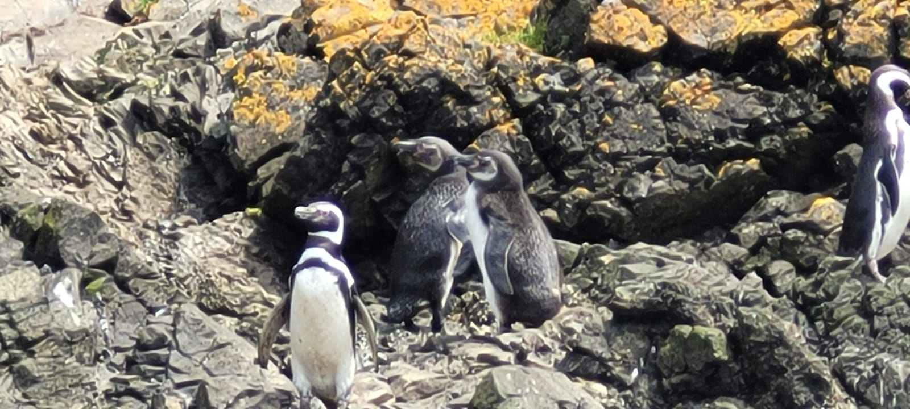

Bienvenido al sistema de registros de aves en Chile
Este sitio corresponde a un prototipo desarrollado para el curso CC5002 - Desarrollo de Aplicaciones Web.
Dentro de esta pagina encontraras distintas funcionalidades, como registrarte como voluntario, informar un avistamiento, ver el listado de avistamientos que se va juntando por la comunidad donde puedes filtrar por su tipo y ordenarlo por la fecha o su lugar, y por ultimo ver en graficos la estadistica de los avistamientos.